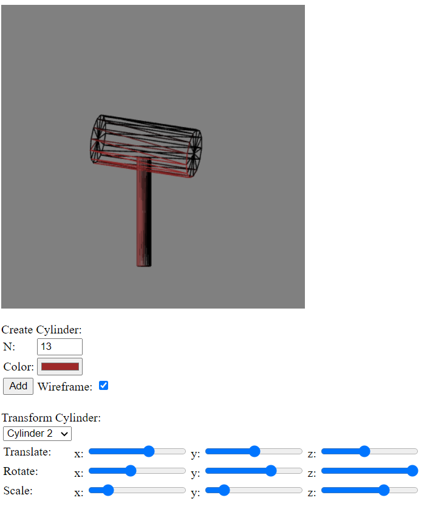
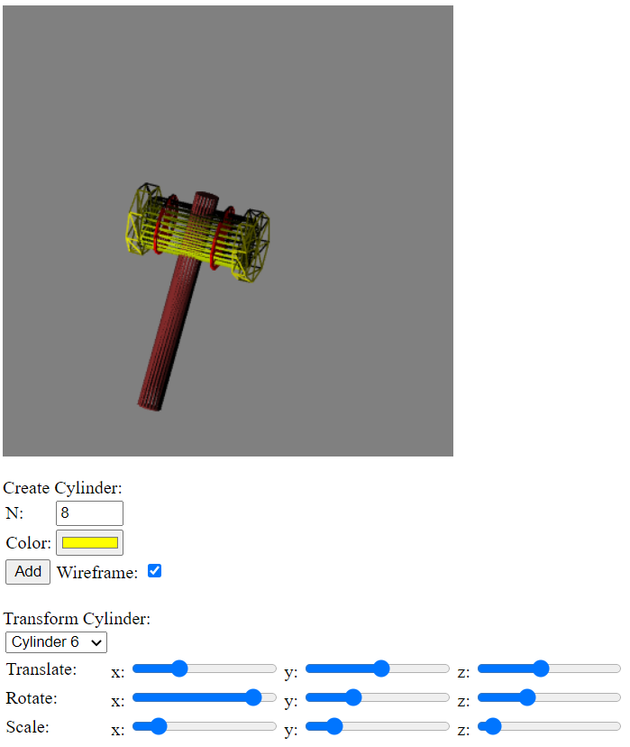
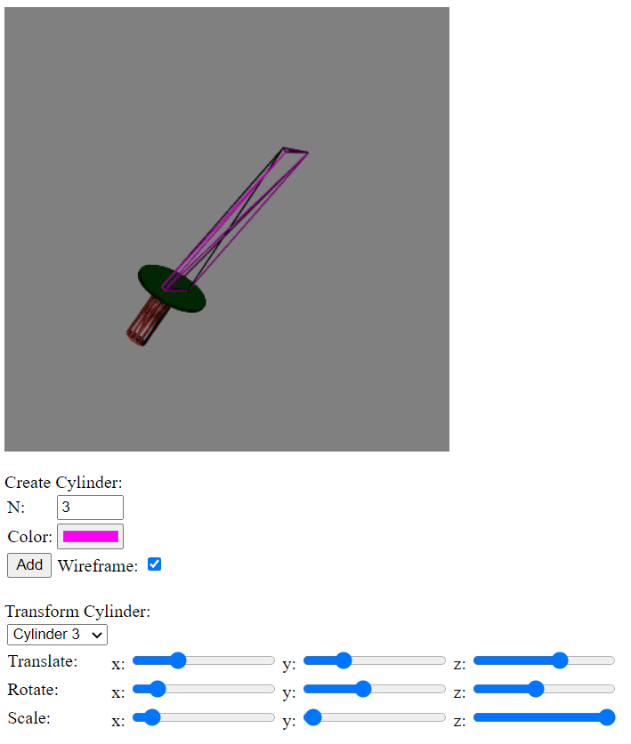

Date: April 26, 2021
A program that contains a 3D environment where users are able to create colored cylinders with N sides
and are able to perform transformations on each cylinder object utilizing Matrix Transformations. The
possible transformations users can choose from are Translations, Rotations, and Scaling.
Each side of the cylinder object contains Normals to perform Flat Shading depending where the light source
is. Depending on the user input, users can render the objects placed onto the WebGL Canvas and switch
between Flat Shading or Wireframes through a toggle button.
The program starts with a Mallet Object created already in the main() function,
having 2 cylinders connected and transformed individually.
- To create a cylinder, you must input an N number that will represent the number of sides for the cylinder.
Below the number input is a Color Box, where the user can decide what color shading the user wants on their
created cylidner. Once the user has decided on N and the Color, they can click on "Add" to create the new cylinder.
- To control a specific cylinder, users can click on the drop down menu containing all created cylinders and click
on the numbered cylinder they would like to control.
- To make every cylinder into a wireframe rather than completely filled out, users can use the "Wireframe" checkbox
to view the wireframes of each cylinder.
- Users are able to transform each Cylinder Object through 3 options: Translate, Rotate, and Scale. Each transformation has 3 slides that are assigned to each axis on the 3D plane. Each slider performs the appropriate transformation depending on which axis it is being used on.
NOTE: I am not 100% certain whether these are truly issues or not on the program, however they are
things that I have noticed.
* Depending on the perspective of the object, when scaling the z-axis of the cylinder the brightness/lighting of the
bottom or top of the cylinder dims down when increasing the z-axis. The opposite is true when decreasing the z-axis
as it will become brighter.
* When translating the z-axis to the max on either side of the slider, the object will clip through the canvas and show
the insides of the object.
Mallet
Cylinder1: n = 24 sides (Handle) / Cylinder2: n = 13 sides (Head)
Mallet Wireframes
Cooler Mallet
Cylinder1: n = 20 (Handle) / Cylinder2: n = 25 (Head Base)
Cylinder 3 & 4: n = 12 (Red Around Head) / Cylinder 5 & 6: n = 8 (Side Ends of the Head)
Cooler Mallet Wireframes
Sword
Cylinder1: n = 12 (Handle) / Cylinder2: n = 360 (Guard) / Cylinder3: n = 3 (Blade)
Sword Wireframes
